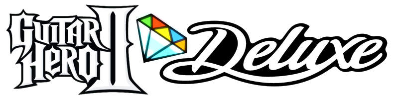

|  |
PS2 VersionDownload comes with the Script Pack for examining the game's code with comments, OPL box art, and masks for cutting out the game's HUD for when you're streaming and you want people to stare at you instead.
Deluxe 2.0 Custom EditionThis is a slick, minimalist, all-unlocked base for getting songs into Deluxe, especially using the Onyx Music Game Toolkit.
|
Xbox 360 Version
SongsHere are some ready-to-go song packs for Deluxe, if you want to convert your Clone Hero songs or make your own pack, use Onyx Music Game Toolkit. On hardware, put these packs in `Hdd1/content/0000000000000000/415607E7/00000002` |
|

Guitar Hero II © 2006 RedOctane, original game code by Harmonix Music Systems. Guitar Hero II Deluxe is a fan project and is not affiliated with Activision, Harmonix, or RedOctane. |